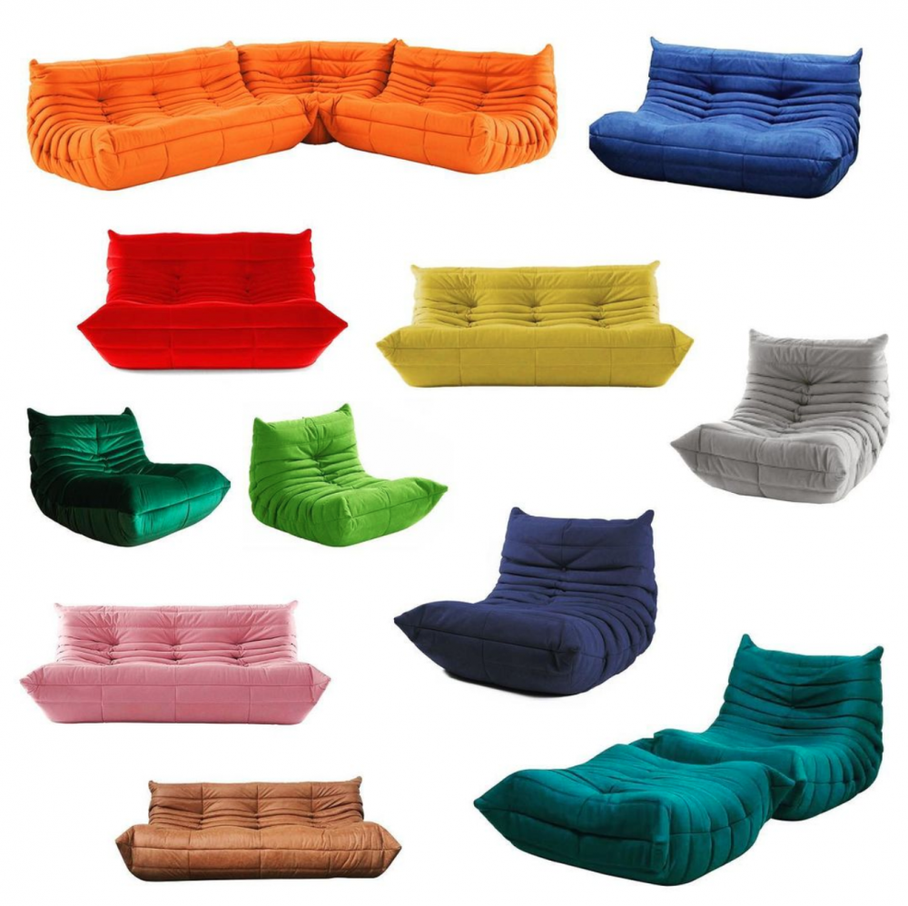

Basic Instincts
LIBERTÉ EGALITÉ UPHOLSTERY: 15 REASONS LIGNE ROSET 🌹 RULES SEATING

A colorful array of different Togo modules, designed by Michel Ducaroy for Ligne Roset in 1973. (Image courtesy of Ligne Roset Fünf Höfe)
Low and loungy, all squishy foam and scrunched up upholstery — few sofas are as recognizable as the Togo. While it’s been the toast of the post-millennial design gram recently, the modular lounger actually dates back to 1973, when French industrial designer Michel Ducaroy designed it on a commission from French furniture manufacturer Ligne Roset. The company, based near Lyon, was founded in 1860, and has a long history of supplying the French public with that certain je ne sais quoi for the home, especially since WWII. In addition to working with Ducaroy, Ligne Roset has collaborated with some of France’s most notable designers and architects, including Erwan and Loic Bouroullec, Pierre Paulin, Inga Sempé, and Jean Nouvel, to name but a few. While most companies would be lucky enough to have one bestseller in their collection, for Ligne Roset the Togo is just one of many hits. PIN–UP selected 15 faves, in no particular order.